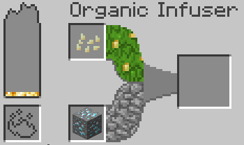
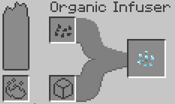
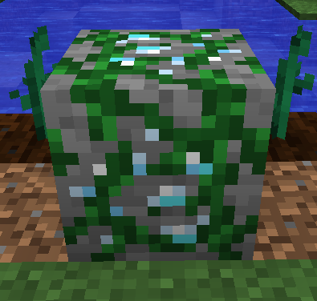
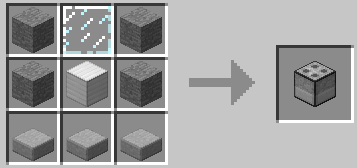
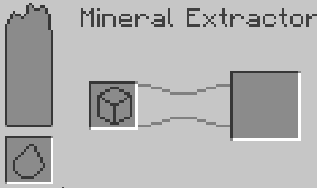

The Minecraft Mod Oreganic adds organic ores into the game. That wasn't my pun this time.
Oreganic makes all ores within Minecraft obtainable through farming and a processing method.
First things first, you will need an ore block, some pumpkin/melon seeds and at least 7 Blaze Powder.
You will also need an "Organic Infuser" to infuse the mineral material with the organic plant matter of seeds.
They can be crafted like so.

Place it down and BAM. New GUI. Left slot and bar is the fuel and fuel meter. The Organic Infuser retains fuel once it is input, so once you've put fuel in, dont break it or else you'll lose the fuel you put in!
Top and bottom middle slots are for the pumpkin/melon seeds and the ore you wish to make seeds out of.
So go ahead and put Blaze Powder in the fuel slot, some seeds in the top slot and an ore block in the bottom slot. It takes just about 7 Blaze Powder for one seed.
Did you do it? If you did, you'll notice the fuel meter dropping and the progress bar going from left to right!

Eventually, you'll get a seed of whatever ore you put in the bottom slot.

Let it grow the stem and eventually, pop, you will have an "Organic Ore" version of whatever seed you planted. Mine this ore up with whatever kind of pickaxe the normal ore takes (Diamond requires Iron pick etc...)
Don't destroy the stem though, otherwise another one wont grow!

Next you need a new machine! The "Mineral Extractor". This machine will... well... Extract the mineral.
It is crafted like so:

The Mineral Extractor's GUI is a bit simpler. Put a bit of flint in the fuel slot and an organic ore in the block slot and let the flint strike the iron block and burn away the organic material on the block!
The Mineral Extractor acts like a normal furnace and does not store fuel.

Once thats done, there you have it! The finished product of an ore grown from a seed. This process can be repeated again and again for unlimited ores!
Thats about it! Thanks for checking out the mod, hope you have fun with it!